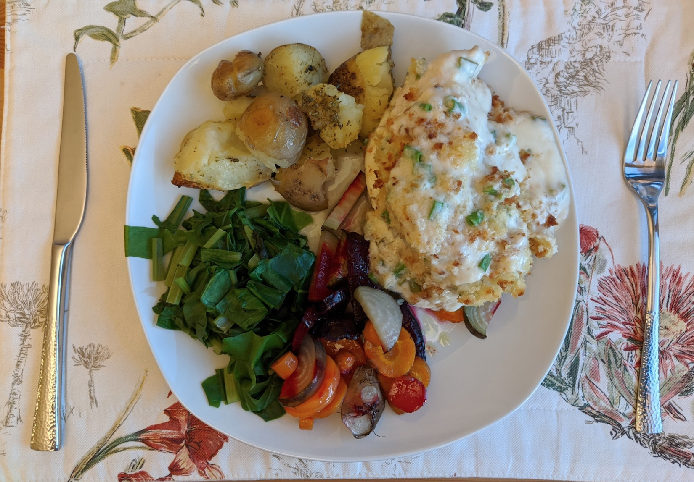

Chicken and spring onion bake
Mmmmm...

Ingredients
- 4 chicken breasts
- ½ cup of chopped spring onion (about 4 or 5)
- 200ml cheese sauce (we used 350g…)
- Mozzarella (sliced)
- 40g breadcrumbs
- 2 Tbsp butter (melted into breadcrumbs)
- Thyme, garlic powder, salt and pepper
- Side of veggies and potatoes
Instructions
- Butterfly the chicken breasts and season with thyme, garlic powder, salt and pepper.
- Sandwich slices of mozzarella into each breast, and lay them into a tall-ish oven dish.
- Sprinkle over spring onions, then put cheese sauce evenly all over the top.
- Bake for 30 minutes at 180C, and sprinkle on butter and breadcrumb mix with about 5 minutes to
go.
Serve alongside some choice veggies.
Serves 4.